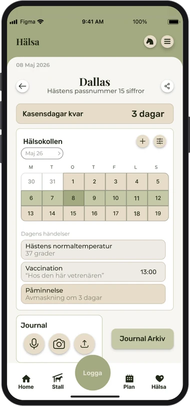
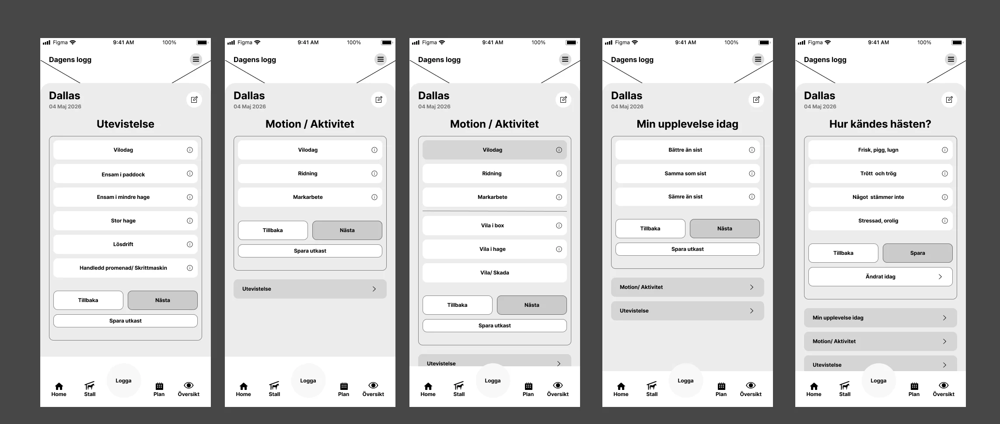
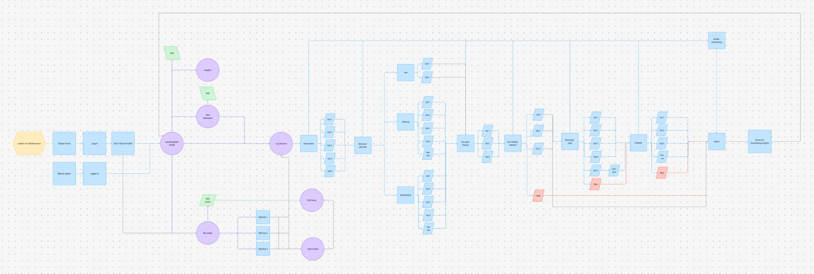
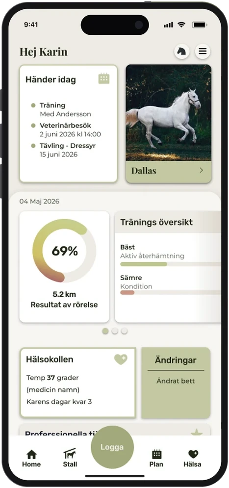
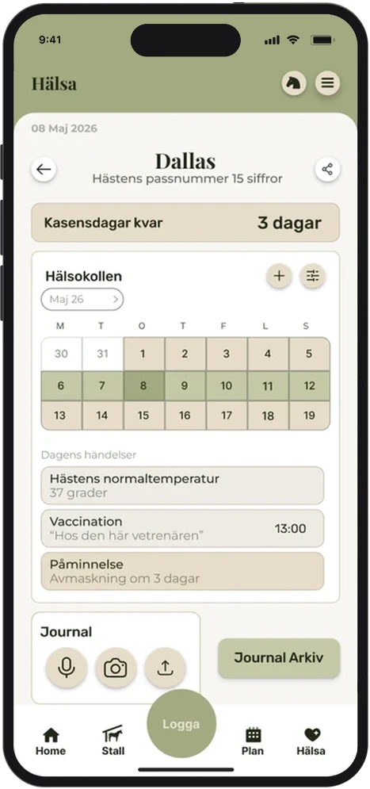
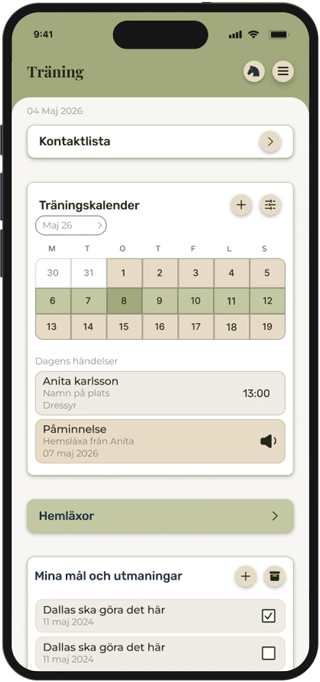
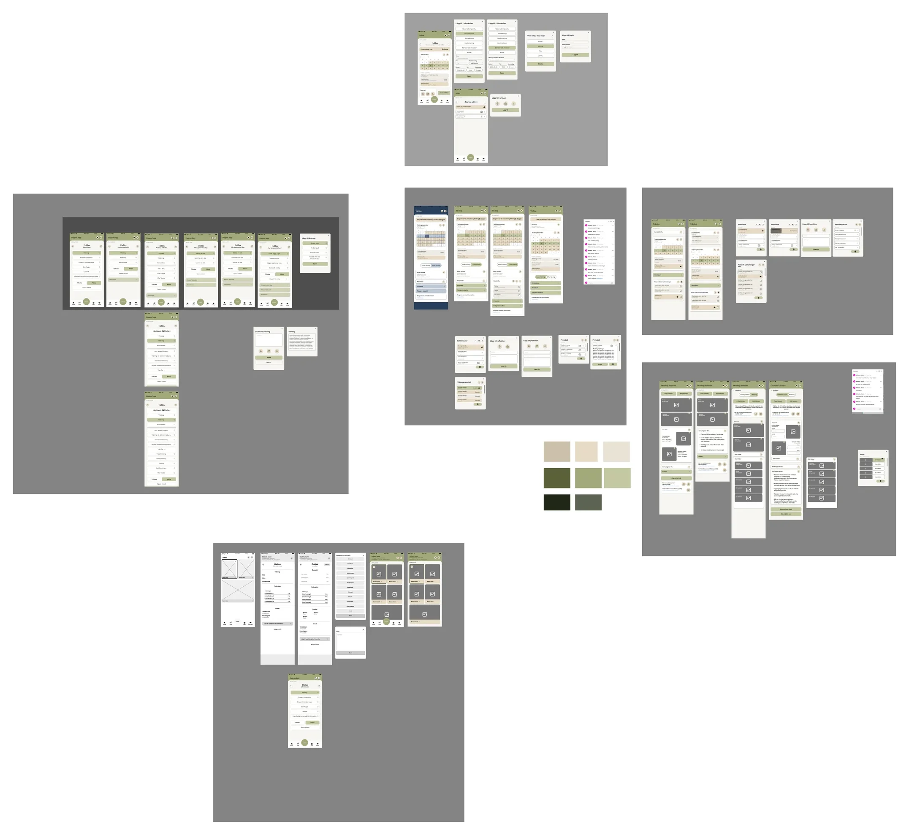
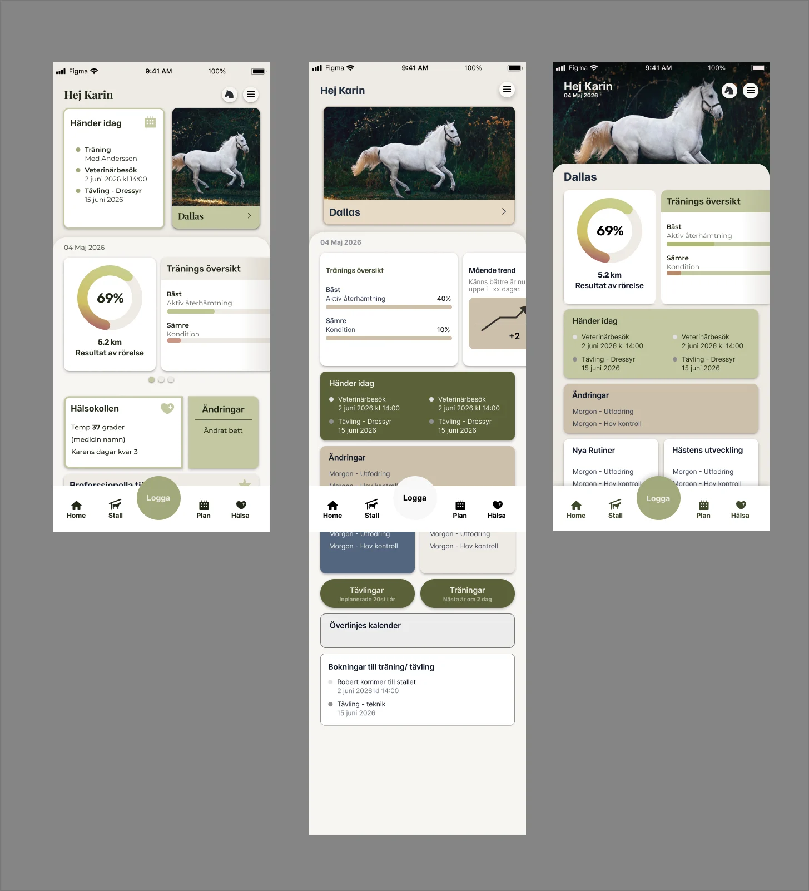
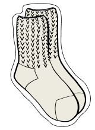

SadelScanner
Hodd
A horse diary that goes from gut feeling to overview. I designed Hodd, an app where riders log training, health, movement, routines and equipment in a few taps in the stable, and see the patterns before small problems become big ones.
- Deliverables
- UX/UI Design
- Duration
- 4 Months
- Team
- Team of 5,
Sole UX/UI Designer

The brief
My task was to help the team behind Hodd with the UX and UI of their new app. They wanted me to start with the diary log, the heart of the app, where riders log how their horse is doing.

Thinking like a user
I helped structure how a user would actually move through the app, and made it visual with a user journey. Seeing the whole journey in one place made it easier for us as a group to agree on what each step should give the rider, and what we wanted to get out of it.
We then tested the flow on a few users and iterated on it based on what we saw.

The rest of the app
From the diary I moved on to the rest of the app: what the start page could look like, and the pages for health, competitions, the stable, training and the calendar.
I also looked at how Hodd could connect to SadelScanner, the main company, which uses 3D scanning to help riders find a saddle that fits their horse.




Iteration
The whole project has been one long iteration, and the work on Hodd still goes on: finding the best way to give you an overview of your horse’s health. The start page shows it well. It went from a grid of cards with today’s plans, to a longer overview with mood trends and bookings, to a large photo of the horse at the top.

Key learning
This was one of my first paid projects, and working with a team for real taught me a lot. My own opinion doesn’t weigh nearly as much as what the people testing the app think. Still, gut feeling is an important part of the job too.
Clear communication matters more than I expected. We all saw things differently, and we learned a lot from each other. When everyone feels comfortable questioning things, the project moves forward much faster.
Most of all, I learned that I’m actually good at what I do, and that I can find confidence in it.
Also for Sadelscanner
Outside of Hodd, I also worked with Sadelscanner, the company behind it. I visualized their user manual and made the patent drawings for their product, the insert that goes into the saddle.
